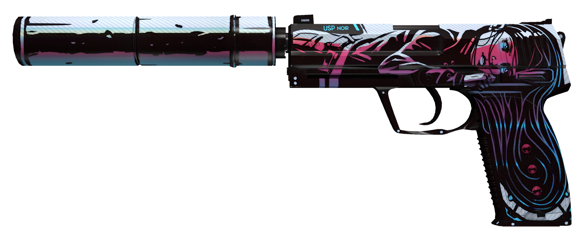

Weap-info

Esta arma foi baseada na arma real "Heckler & Koch USP" conhecida tammbém por USP.
Criada por Helmut Weldle entre 1989-1993.
Esta arma tem um carticho 9*19, tem 0.748Kg, 19.4 centimetros de comprimento
Damage - 35
Firerate - 5
Recoil Control - 70
Accurate range - 22m
Armor penetration - 101
AK
M4
AWP
DEAGLE
USP-S
SCOUT